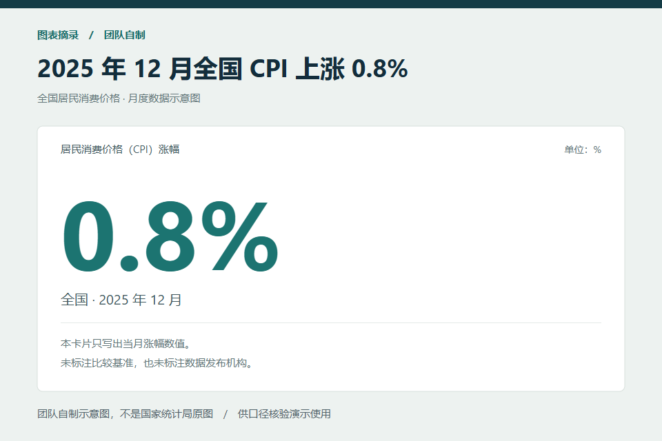

AI WEB 网页开发挑战赛 · 作品技术报告
图证
图表证据审计台
从一张截图，走到一条
有计算、有来源、可复查的结论。
多模态读取受限工具调查引用与口径校验
一个看起来相同、含义却不同的数字
同值 ≠ 同口径
同比与环比、不同月份、不同范围，
不能因为数字相等就视为同一条证据。
图证让 AI 找出需要核查的主张，由程序校验依据与计算。
89.7%
历史检索臂运行通过率
61 / 68，非泛化准确率
361
本次本地行为 / API 测试
90 次浏览器测试另计
Vue 3 · TypeScript · Node.js / Express
Windows 本机 Web 应用 · 固定国家统计局资料库
材料核对日期：2026-10-01 · 代码参考：__COMMIT__
在线数字来自既有真实模型记录；本次材料核查未重新调用模型。图内一致只说明截图自洽，来源一致只说明与所引发布一致。
01 / 项目概述
让每个结论都能复查
图证面向只有图表截图的普通读者，把“这张图是否说得通”拆成图内计算与来源核验两类问题，展示每条结论的依据和适用范围。
只有截图模型抄录图上数字，读者确认或更正，程序计算涨幅、核对跨图口径，并提示纵轴呈现风险。
具有可查来源图文主张进入固定官方资料库调查；检索、推断检查、关键补证和修改建议都保留过程与引用。
评审阅读导航
项目概述与需求 2-3
系统架构 4
AI 选型与结构化读取 5
工具调查与检索校验 6-7
核心案例与人机协作 8-10
前端工程与交互 11
评测设计与实际结果 12-13
测试、运行与部署 14
创新、局限与展望 15
证据与复现索引 16
与官网评分维度的对应
| 维度 / 权重 | 本报告展示的核心内容 | 页码 |
|---|
| AI 技术深度 / 35% | 多模态结构化输出、模型自选工具、检索增益、引用与改写校验 | 5-10、12-13 |
| 创新性 / 25% | 结论按证据分级，必要补证与失效机制，官方修订贯通建议 | 3、8-10、15 |
| 前端工程质量 / 10% | 类型约束、按路由拆包、请求隔离、三视口自动化 | 4、11、14 |
| 实用性 / 10% | 从算术矛盾到同比 / 环比误读的可操作案例 | 3、8-10 |
| 用户体验 / 10% | 逐条确认、补证说明、历史结论、失败恢复 | 9、11 |
| 社会价值与商业潜力 / 10% | 数据素养与信息阅读场景；应用方向与验证条件 | 15 |
评分权重于 2026-10-01 读取官网赛道详情核实。这里只映射材料与评分项，不预测赛事得分。
02 / 需求分析
先回答读者能核查什么
读者通常拿不到原始表格。直接让大模型判断“真假”，容易把看不清的标签、口径缺失或模型记忆包装成确定结论。图证把每一步需要的依据显示出来。
| 用户需要 | 产品行为 | 验收观察点 |
|---|
| 核对标题涨幅 | 确认图上两值后用程序复算 | 80 → 100 得到 25%，与标题 40% 矛盾 |
| 比较两张图 | 逐项核对指标、范围、时间、单位 | 口径不一致时先提示冲突 |
| 理解纵轴风险 | 并列原轴与从零起点的柱高对照 | 提示视觉风险，不将其直接判为造假 |
| 核查配文依据 | 拆解主张并检索适用官方发布 | 错月份、错范围及术语页引用不被当作数值依据 |
| 补足关键口径 | 只问会改变结论的一个问题 | 用户补充与官方依据分别标识 |
| 修改错误配文 | 逐处给出有引用的建议，由用户采用 | 输入改动后旧建议立即失效 |
图内审计的完整路径
图片 / 样例 → 模型观察 → 人工确认 → 确定性计算 → 证据卡。
增长率公式(100 - 80) / 80 × 100 = 25%
标题声称 40%，相差 15 个百分点。
数值不清、单位不一致、时间顺序错误或基数为零时，保持“需要确认”。用户更正读数后重新计算，原始模型观察仍可复查。
预置样例与实时模型读取在页面上分别标注；离线样例可复现计算，但不证明模型读图质量。
 图 1 · 逐条确认与证据卡。预置样例界面截图，不是实时模型输出。
图 1 · 逐条确认与证据卡。预置样例界面截图，不是实时模型输出。
实现：shared/audit.ts、shared/cross-image.ts、shared/axis-risk.ts；验证：tests/audit.test.ts、tests/cross-image.test.ts、e2e/reader-workbench.spec.ts。[E1]
03 / 系统架构
模型负责理解，程序负责校验
将多模态与语言判断放在模型接口之后，将计算、引用、口径和输入版本绑定放在可重复测试的领域层。
浏览器 · Vue 3图片与配文输入 / 逐条确认 / 证据卡 / 工具轨迹 / 历史结果 / 模型设置
↓ HTTP / 本机 API ↑
本机服务 · Express + TypeScript图片格式与大小验证 / 模型协议适配 / 调查循环 / 会话恢复 / 设置存储
↓ 结构化观察与工具结果 ↑
共享领域逻辑 · shared/增长率 / 跨图口径 / 纵轴风险 / 固定资料库检索 / 来源适用性 / 修改建议校验
| 接口 | 输入与输出 | 作用 |
|---|
| VisionAdapter | 图片 → 观察值、模型与读取追踪 | 页面与领域计算不依赖具体模型厂商 |
| SourceInvestigationDriver | start / continue / resume / finalize | 双协议共用调查编排与判定规则 |
| SourceSessionStore | 调查 ID、输入指纹、驱动器与既有结果 | 恢复同一调查，防止并发消费或错图接续 |
数据从哪里来，保留在哪里
图片与配文：上传图片先进入服务端内存，调用模型时发送给已配置的远程服务。可恢复对话可在本机内存保留至过期或淘汰。
调查会话：最多保留 16 条，默认有效期 30 分钟；图片与配文的 SHA-256 指纹约束恢复请求。
公开资料：五条国家统计局材料随代码保存，包含链接、发布日期、摘录与内容指纹；运行时只检索此固定集合。
密钥：设置页提交给回环 API，保存在当前 Windows 用户配置目录；页面只接收“是否已配置”。
本机存储不代表所有数据都留在本机：上传图文会发送给用户选择的模型提供方；可恢复对话也不是在请求结束时立即清空。
代码：server/app.ts、server/source-sessions.ts、server/model-settings.ts；领域与接口职责见 docs/STRUCTURE.md、CONTEXT.md。[E1]
04 / AI 技术方案 · 选型与读取
把可变输出收敛为可检查结构
模型与协议的选择
| 选择 | 理由与集成方式 | 验证边界 |
|---|
| 云端多模态模型 | 读取截图中的文字、数值与主张，同时理解配文，避免另建 OCR 与语言分析两条分离路径 | 模糊标签仍需人工确认；不是像素级自动测量工具 |
| Anthropic Messages | 使用 image + text 输入、tool_use / tool_result 对话，来源调查实测采用 deepseek-flash 兼容端点 | 既有来源调查的整组在线证据对应此协议与模型 |
| OpenAI Responses | 视觉读取用 JSON Schema；来源调查用 function calling，统一映射到共享驱动器接口 | 视觉路径有历史在线记录；工具调查仅有本地替身证据 |
| 可配置提供方 | 协议、地址、型号和密钥分别保存，预设区分在线实测与文档依据 | 预设存在或连接成功，不证明图片与完整工具循环可用 |
提示词与输出约束
逐字抄录
不补图上没有的信息
主张拆解
原句与图上摘录分开
类型标记
陈述 / 推断 / 观点
字段校验
Zod 与来源规则
主张结构示意
{ claimText, fromImage, imageExcerpt,
kind, metric, period, scope, basis, value, direction }
保留原文；缺失字段保持空值；
比较方式不明确时不从数值相等反推口径。
直接陈述可以对照同口径数值。推断需要单独检查所需比较方式与方向，例如“同比涨幅回落”不能直接推出“比上月便宜”。观点、动机或未来预测显示为不支持核验。
兼容与失败处理
模型返回结构错误时，调查汇总可获得一次带具体字段错误的重报机会；仍不合法则如实停止。图片读取超时、上游失败和无效结构有独立错误提示，不填入猜测值或预置结果。
工程优化针对可观察行为：结构化输出约束格式，原文追溯限制信息补全，确定性计算降低算术漂移，引用校验限制证据使用；模型兼容回退与重报仍可能产生额外请求。
server/vision-prompt.ts、server/vision-schema.ts、server/observation.ts、server/source-prompt.ts；协议实测见 [E2]、[E5]。
04 / AI 技术方案 · 受限工具循环
行动可选择，执行有边界
模型依据图文决定下一步要检索、比较、追问还是汇总。服务端逐个校验工具与参数，执行后把结果回送模型，再按最终结构组合结论。
图文输入
模型选择工具
服务端校验执行
结果回送 / 汇总
| 工具 | 职责 | 服务端限制 |
|---|
| search_source_library | 按指标、月份、范围与关键词检索 | 只读固定集合；结果标注适用与排除原因 |
| compare_values | 比较有限数值、返回差值 | 程序确定性计算，拒绝无效参数 |
| request_clarification | 指出缺少哪一项口径、影响哪条主张 | 最多一次；补充标为“用户提供” |
| report_source_finding | 提交主张、引用、未解决项与改写提议 | 按 schema 接收，引用与结论由程序再校验 |
150 秒检查阈值循环边界检查
单个模型请求超时 60 秒
上述工具预算不包含汇总调用，也不等于最多六次模型 HTTP 请求。150 秒是循环停止检查阈值，不能当作所有在途请求的严格总耗时上限。
 图 2 · 每次调用展示工具、简短行动理由、输入摘要、状态与耗时。替身响应界面截图；真实调用轨迹见逐次 JSON。[E3]
图 2 · 每次调用展示工具、简短行动理由、输入摘要、状态与耗时。替身响应界面截图；真实调用轨迹见逐次 JSON。[E3]
未知工具、超预算调用与“工具结果还未返回就汇总”会被拒绝并记录。补证恢复继承既有调用数与工具轮预算，不通过恢复重新获得额度。
server/source-investigation.ts、server/source-tools.ts、shared/source-audit.ts；tests/source-investigation.test.ts 覆盖预算、无检索、恢复与非法汇总。[E1]
04 / AI 技术方案 · 检索与引用
命中资料，还要匹配口径
采用固定领域资料的检索增强工作流：先按指标与别名筛选，再按月份、范围和词项匹配排序；命中结果携带适用性。五条材料的规模适合确定性检索，无需引入向量数据库。
| 资料 | 用途 | 不能支持什么 |
|---|
| 2025-12 CPI 发布 | 全国同比 0.8%、环比 0.2% | 其他月份、城市范围的主张 |
| 同比 / 环比解释页 | 解释比较方式 | 任何具体月份的数值结论 |
| 2026-08 CPI 发布 | 同比同为 0.8%、环比 0.4%；验证错月份干扰 | 用“同值”替代时间匹配 |
| 零售总额 2026-08-17 发布 | 逐月环比表中的旧值 | 无视后续官方修订的最终值 |
| 零售总额 2026-09-15 发布 | 官方修订声明与更新后的逐月环比值 | 没有修订声明的跨来源争议 |
本次命中
sourceId 合法
指标 / 月份 / 范围
匹配当前主张
比较方式与引用角色
支持当前判断
保持来源待核对，并显示拒绝或排除原因
 图 3 · 固定官方资料库显示发布者、链接、发布日期与口径。界面展示截图，不是运行时抓取页面。
图 3 · 固定官方资料库显示发布者、链接、发布日期与口径。界面展示截图，不是运行时抓取页面。
可复查的来源记录
每条记录保存短摘录、数值与适用月份；FNV-1a 内容指纹发现集合内容变动，但不是防篡改签名。模型只能引用本次命中的 ID，术语、背景与数值依据分开显示。
能力范围限于固定资料，未实现开放搜索、向量索引或 MCP 服务。
shared/source-library.ts、shared/source-audit.ts；资料原始页面 [S1]-[S5]，评测原始记录 [E3]。
05 / 核心案例 · CPI
同样的 0.8%，不是同样的结论
输入团队自制 CPI 图，配文写“比上月上涨 0.8%”。模型需要分开识别图上读数与配文的比较方式，再检索适用来源。

图 4 · 团队自制样例，依据公开数值绘制；不是国家统计局原图。其缺失的比较方式不能由 AI 猜补。
配文主张
“比上月上涨 0.8%” → 比较方式是环比。
适用来源
2025 年 12 月官方发布：同比 0.8%，环比 0.2%。
与所引来源不一致0.8% - 0.2% = 0.6 个百分点
只说明配文与此发布不一致，不评价作者动机。
| 检查对象 | 程序处理 | 用户看到什么 |
|---|
| 配文的环比主张 | 匹配 2025-12、全国、CPI、环比 | 不一致、正确值 0.2% 与引用 |
| 图上缺比较方式的数值 | 不能从同值推断同比 | 来源待核对、缺失口径说明 |
| 2026-08 同比 0.8% 的命中 | 与当前主张月份不一致 | 排除原因，不用作当前数值依据 |
| 配文明确写 2026-08 环比 | 按配文自己的月份重新匹配 | 与该月环比 0.4% 核对，不沿用图上的月份 |
 图 5 · 主张逐条展示结论、原文与依据。替身响应界面截图；真实案例 q04 / q05 的逐次结果见 [E3]、[E4]。
图 5 · 主张逐条展示结论、原文与依据。替身响应界面截图；真实案例 q04 / q05 的逐次结果见 [E3]、[E4]。
案例 q04 / q05；samples/source-audit-questions.json、samples/source-audit-expectations.json。最新整组记录 q05 三次均按 2026-08 得到配文不一致。[E3]
05 / 核心案例 · 必要补证与修改建议
让用户补口径，让证据约束改写
配文仅写“12 月 CPI 上涨 0.8%”时，同值不足以确定同比还是环比。先检索资料，再询问缺少的比较方式；回答以“用户提供”进入当前主张。
 图 6 · 问题说明答案影响哪条主张。替身响应界面截图。
图 6 · 问题说明答案影响哪条主张。替身响应界面截图。
补证沿同一个调查 ID 和模型对话恢复，继承既有检索命中与预算。回答不能覆盖图文已明确写出的口径；冲突或无法解析时保留待核对。
每处修改都有依据
| 原结论 | 建议处理 | 校验依据 |
|---|
| 与来源一致 | 保留原句 | 不因为模型换说法而新增事实 |
| 与来源不一致 | 替换为适用来源中的正确值 / 方向 | 数值、月份、范围与当前引用 |
| 待核对 / 推断依据不足 | 保留限定或建议删除 | 不把未解决项写成已证实 |
 图 7 · 原句、建议、理由与引用并列，用户显式采用。替身响应界面截图。
图 7 · 原句、建议、理由与引用并列，用户显式采用。替身响应界面截图。
模型只提出建议，程序逐处验证；不合格提议保留拒绝原因并使用程序兜底。采用后写入配文，旧结论转入历史；更换输入或重新调查使旧建议失效。
实现：shared/source-audit.ts、server/source-sessions.ts；q18 / q20 在线记录 [E3][E4][E6]，页面测试 [E1]。
05 / 核心案例 · 官方修订与结论失效
依据变了，结论和建议一起更新
“社会消费品零售总额”的两份官方发布带有明确修订声明。系统据此识别旧发布被替代的逐月环比值，保存修订前后值与两份发布链接。
旧发布
2026-08-17
2026-06 环比 0.35%
官方修订声明
2026-09-15 发布
建立明确替代关系
有效依据
2026-06 环比 0.40%
用于结论与修改建议
| 案例 | 依据处理与结果 | 历史实测 |
|---|
| q21 配文使用旧值 | 按修订后 0.40% 核对，旧值 0.35% 判为不一致 | 检索臂 3/3 通过 |
| q22 配文使用修订后值 | 配文与来源一致；图中旧值仍不一致 | 检索臂 3/3 通过 |
5 次运行发生版本替代，5 次通过判定按运行计数，不按主张计数。复查由程序同步完成，不新增模型调用、不增加检索轮次；不声称程序计算本身耗时为零。
仅有数值差异、没有官方修订声明时，不能使用这条规则。现有能力覆盖官方声明明确的替代关系；“同口径来源存在分歧”尚无实现与验收证据。
输入改变时怎样阻止旧结论复活
当前输入 A
得到结论 A
修改图 / 配文
请求序号失效
旧结果转历史
迟到响应丢弃
重新核验 B
建立新依据
 图 8 · 历史结论注明失效原因，仅作复查。替身响应界面截图。
图 8 · 历史结论注明失效原因，仅作复查。替身响应界面截图。
服务端恢复时检查图片字节与配文指纹，拒绝过期、错输入和并发恢复；前端 AbortController 与请求序号一起阻止迟到结果覆盖新输入。浏览器取消不等于已发送的上游调用立即停止计费。
资料 [S4]-[S5]；版本复查记录 [E3]，本地引用贯通验证 [E1]。本地修复之后尚未重新在线验证。[E7]
06 / 前端工程与体验
长耗时 AI 任务也要可操作
清晰的任务页面
首页、图内工作台、来源核验和设置页各有明确职责。按路由懒加载；共享证据卡组件与 TypeScript 领域结果减少前后端语义偏差。
防止半完成状态
读取图片前清除旧结论；取消、换图、框选和离页会使在途结果失效。主图载入期间禁用跨图选择并说明原因，完成或失败后恢复操作。
面向复查的层级
先展示当前状态，再展开主张原文、依据、排除资料和调用轨迹；超出核验上限的原文单独列出，避免读者以为全文都已核查。
加载与错误反馈
显示等待时间、取消入口与分类错误，提供配置、重试、缩图和框选路径。当前轨迹在调查返回后展示，尚未实现 SSE 流式工具事件。
 图 9 · 390px 视口的主张卡。替身响应界面截图。
图 9 · 390px 视口的主张卡。替身响应界面截图。
| 工程证据 | 本次结果 | 证明范围 |
|---|
| 三视口端到端 | 30 用例 ×3 视口 = 90/90 | 320、390、1280px 的路径、竞态与溢出检查 |
| 类型检查与构建 | Vue、服务端、e2e 配置均通过 | 本地类型与打包成功 |
| 前端构建产物 | 主 JS gzip 37.43 kB；样式 gzip 13.23 kB | 资源体积；不等于首屏速度或 Core Web Vitals |
界面路径自动化采用预置数据和替身响应。它证明交互与状态处理，不能代替真实模型体验、辅助技术测试或陌生用户可用性研究。
web/router.ts、web/pages/、web/components/；三视口测试 [E1]。本次构建记录与评估见 [E7]。
07 / 测试与评测设计
检索有没有用，要保留对照
同一模型、图片、配文、参数和预算设置两条臂，只改变检索工具可用性及其必要说明，再依据独立期望判定每次运行。
有检索臂模型可搜索固定资料库，引用本次命中材料，并接受程序口径校验。
无检索臂不声明检索工具，拒绝检索请求；命中集合为空，不允许用模型记忆替代来源。
| 控制项 | 设计 |
|---|
| 模型与协议 | deepseek-flash；Anthropic Messages 兼容端点 |
| 题集 | 22 道团队自制开发题，每题每臂三次；含错数值、错月份、错范围、推断、观点、补证与版本修订 |
| 独立期望 | 题目与期望分文件保存；运行前核对图片、资料库指纹与预算冻结配置 |
| 恢复段 | 只有模型提出追问时才运行，初查与恢复分别判定；缺追问不伪造恢复记录 |
| 失败记录 | 上游或结构失败单列，不用样例顶替，不从数据集中删除 |
| 建议判定 | 独立复算数值、月份、范围、加强表述及未解决项限定规则 |
指标的准确含义
运行通过率 = judgment.ok 为 true 的有效运行数
/ status 为 ok 的有效运行数
一次运行可能包含多个主张，
判定同时涉及状态、引用、追问、补证或建议要求。
旧记录将此指标称为“主张状态正确率”。按评测实现，它是整次运行通过率，不是逐条主张准确率；本报告据此统一表述，保留原始数据。
无检索臂受同样的“有依据才能下结论”规则约束。因此对照说明来源支撑工作流的价值，不能声称相对普通聊天模型提升了通用事实判断准确率。题集均为开发题，尚无独立预留集。
samples/source-audit-questions.json、samples/source-audit-expectations.json；scripts/evaluate-source-audit.ts 的 judgeRun / summarizeEvaluation。[E3]
07 / 实际评测结果
展示结果，也保留失败
最新存档整组评测：22 题 ×2 臂 ×3 次，外加条件触发的补证恢复段。计划最多 138 次，实际记录 137 次；模型没有追问的一次恢复未发生。
| 指标 | 有检索 | 无检索 |
|---|
| 有效运行 / 通过运行 | 68 / 61 | 69 / 19 |
| 上游 / 结构失败 | 0 | 0 |
| 接受引用 / 被拒引用 | 145 / 2 | 0 / 0 |
| 虚构引用 / 无适用来源越界 | 0 / 0 | 0 / 0 |
| 平均耗时 | 6,723 ms | 5,472 ms |
两臂汇总差约 62.2 个百分点，分母因条件恢复不同而不相等。零违规是此有限题集的观察，不是对所有输入的安全保证。[E3]
检索臂的七次未通过
| 题型 | 未通过数 | 实际问题 |
|---|
| q06 范围错配 | 2 | 未产出可匹配的配文主张，含无结论运行 |
| q16 超过三条 | 1 | 整轮无结论 |
| q18 补证恢复 | 3 | 追问漂移、未套用用户补充等 |
| q20 混合改写 | 1 | 建议数值不满足期望 |
此前 20 题版本为 58/62（93.5%）；题集、资料库和运行轮次不同，不能合并成一个准确率，也不能仅凭下降推断新增功能导致退化。五道演示题的一次抽样为 6/6，仅说明该次配置下通过。[E4][E6]
这些在线记录早于后续来源引用、方向改写与补证隔离修复。当前代码已通过本地回归；修复后的真实模型稳定性尚未复验。[E7]
本次按原始 JSON 重新汇总 137 条记录，结果与分臂分母、通过数及平均耗时相符。[E3]
08 / 测试、运行与部署
可复现的本机 Web 应用
本次本地验证（2026-10-01）
| 检查 | 结果 | 证明范围 |
|---|
| npm test | 361/361，21 个文件 | 行为、API、结构与边界回归；不调用真实模型 |
| npm run test:e2e | 90/90，30 用例 ×3 视口 | 替身 / 预置数据下的浏览器路径 |
| npm run build | 通过 | Web、服务端与 e2e 类型检查及产物构建 |
| npm run eval:samples | 23/23 | 18 张固定图与五组跨图的独立期望 |
| npm run verify:sample-renders | 18/18 | 本机 Edge 下 SVG 与 PNG 字节同源 |
| npm run docs:check | 无缺失链接 | 本地文件链接存在；不验证网络与内容 |
评审复现方式
# Windows，Node 22.12+ 的 22.x 或 24.x，Edge
npm ci
npm run dev
# 网页 http://127.0.0.1:5173
# API http://127.0.0.1:3001
网页与 API 端口在 .env 配置（WEB_PORT、PORT）。启动先预检端口，被占用时直接提示；不静默更换端口。模型密钥在设置页配置，离线样例、计算和固定样例评测不需要密钥。
CI 与部署状态
GitHub Actions 使用 Windows + Node 24，执行文档链接、类型、构建、行为测试和三视口浏览器测试；失败上传 trace。图片字节同源步骤受 Edge 栅格化差异影响，属于允许失败的信号，不能由 CI 总绿推断其通过。
已验证的交付形态是本机运行。公网部署尚无上线或可用性证据，反向代理方案也不等于已部署；公共演示是赛事可选项，需另做访问、密钥隔离与额度管理。
密钥配置与赛事要求的差异官网要求 API 密钥通过环境变量配置。本项目按本机使用设计保存在用户配置文件，不读取模型密钥环境变量。防止密钥进入仓库的目标已有实现，但配置方式尚未满足这项文字要求，应在正式提交前完成适配或取得组委会认可。
本地命令、基线与 GitHub CI 核对见 [E7]；本机密钥实现 server/model-settings.ts；官网 [R1]。
09 / 创新、局限与展望
把 AI 的判断变成有依据的操作
| 创新点 | 用户获得的价值 | 工程落点 |
|---|
| 按证据分级的图表阅读 | 知道哪一部分能核查，哪一部分仍不确定 | 图内、来源、推断与观点分别判定 |
| 受控的模型调查 | 可查看行动理由、工具结果和停止原因 | 共享编排器、参数校验与调用预算 |
| 有来源的局部改写 | 知道改哪里、为什么改、依据在哪里 | 原句与引用绑定，提议逐处验证 |
| 补证与输入失效联动 | 旧判断不会伪装成新输入的结果 | 用户补充标记、指纹、请求序号与历史区 |
| 官方版本替代贯通 | 复查旧数值，同时保持结论与建议依据一致 | 明确修订声明、有效来源与版本记录 |
社会价值与应用方向
图证将算术、统计口径和来源辨识变成可操作的读图过程，可用于数据素养教学、资讯阅读和编辑自查。商业方向可探索教学案例工具或编辑辅助模块；目前没有付费用户、市场规模或节省时间的实测，不能据此声称商业模式成立。
已经知道的局限
- 资料库只有五条材料、两类指标，图表与评测题均为团队开发样例，没有独立预留集。
- 主张分类、追问时机和改写仍有模型漂移；固定词表与数值规则无法覆盖全部语言表达。
- 来源一致不是事实真实性保证；同口径来源分歧、开放检索与通用知识库尚未实现。
- 完整工具循环在线证据只覆盖指定 Messages 配置；换协议、端点或模型需重新验证。
- 没有真实用户可用性研究、生产部署压测或长期可用性承诺；实时工具流式展示尚未实现。
总结与下一步
当前已形成截图确认、工具检索、引用核对、必要补证与修改建议的完整路径。继续验证时，应先补齐当前代码的在线复验和独立预留题，再按有适用来源的场景扩展资料库；用户研究与公共演示以各自实测为完成条件。
核心成果AI 将图文转换成可调查的主张；程序把来源、口径和计算组合为可复查结论；用户决定是否补充与采用修改。
能力与验证范围交叉核对 PLAN.md、CONTEXT.md、docs/PHASES.md、代码、测试及 [E1]-[E7]。创新点描述产品机制，不声称算法首创。
附录 / 证据与复现索引
每个数字都有出处
在线数据采用仓库原始记录，指标口径按评测实现说明；本次材料核查不新增模型请求。截图用于展示界面，图注区分预置、替身与资料库展示。
固定官方资料的原始链接
资料录入包含原始链接、发布者、日期、短摘录、适用口径与指纹。本次未重新核对五条统计发布的完整页面，不把文件链接存在等同于来源再次验收。
源码与完整证据：github.com/Iskuyal/web-match。复现配置与安装步骤见仓库 README；赛事版生成命令为 node docs/submission/build-report.mjs --competition。
本文不包含密钥、真实用户数据、任务日志或开发待办。团队报名信息与视频、仓库访问权限在提交材料入口核对，不能由本 PDF 生成结果代替。